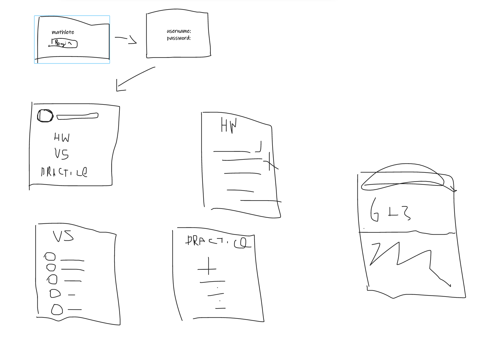

Project Description
Overview
askfnkdsgn dknfk lkdnsfk ksdn faldnkf lkadn fandkfn ownf dksnf skdfn
Topic
The project idea is a mobile app featuring rapid fire maths questions that are targeted at primary school students to help them become more proficient at maths. The idea behind the app is for the students to develop fast thinking skills using rote learning when solving maths questions. Additionally it will encourage students to have fun doing maths at the same time. The maths questions on the app will be popup questions that require the user to quickly answer several addition, subtraction, multiplication or division maths questions. Users will answer maths questions that feature different difficulties that will be targeted at their age groups/year levels.
The app will mainly be sold to schools for distribution to their students but also available for the general public on the app store. Schools will use the app to primarily assign homework for students by instructing the students to go home and do the questions that their teacher set for them that week. The statistics (how many questions they’ve attempted and answered correctly) of each student will be saved for the teacher to look at to make sure that their students have done their assigned homework.
There will be four math operations which are addition, subtraction, multiplication and division. Each operation will have three difficulty settings which will be called ‘Grades 1-2’, ‘Grades 3-4’ and ‘Grades 5-6’. Grades 1-2 questions will have questions with only one-digit numbers (e.g. 3x2 or 9-4). Grades 3-4 questions will have two-digit numbers (e.g. 12x11 or 15+14). Grades 5-6 questions will have larger two-digit numbers and even some three-digit numbers (e.g. 80x4 or 118+51).
Motivation
The motivation behind making the app is to provide schools and students with a reliable app that makes learning and practicing maths fun and easy for students. Our aim is to have this app utilized by many primary schools as a simple and efficient way to teach children critical maths skills through embracing modern technology. Mathematics is a crucial life skill that all children learn the foundations of in primary school. This app uses rote learning techniques to effectively and quickly teach children how to solve problems in their head.
More often schools are embracing modern technology in other areas such as purchasing iPads for students and having electronic roll marking instead of writing down attendance with pen and paper; our app will fit with this theme by replacing maths questions sheets and multiplication cards for unlimited electronic rapid-fire questions.
The motivation for students to use the app will be because it is part of compulsory homework assigned by their teacher or because the app is fun for them to use. However, making the app fun to use will be difficult, so we’ve decided on two ideas to make students want to use the app. The first idea is an experience point bar featuring a levels system that rewards the user with items to customize their own character. The second idea is a leaderboard that ranks each user based on how many correct equations they’ve solved. More detailed information on these ideas is in the ‘plans and progress’ section down below.
Landscape
The most similar app is called ‘math learner’. It is an app that features thousands of math questions tailored to the app of the user. However, it requires a $40.99 per month subscription to use the app which is a steep price and may not be worth the cost for many parents. ‘Quick maths’ is another app that aims to train users in rapid problem solving. However, the app only supports drawing on the screen for answering questions. This causes problems for the app reading your answer; if you don’t draw an easily readable number then your answer will be misinterpreted and counted as incorrect.
Our app’s difference from the competitors is that our app is sold directly to schools and will be accurate to the Victorian Schools Curriculum for Maths, something that publicly available apps cannot claim. Additionally, there will be no hidden or surprise costs as other publicly available apps have. Another feature that would be added is a system for teachers to be able to create their own maths problems and share it with their class through the app. Teachers would create a “class” and be able to add students into it to share homework and problems while also being able to track student progress.
Detailed Description
askfnkdsgn dknfk lkdnsfk ksdn faldnkf lkadn fandkfn ownf dksnf skdfn
Aims
askfnkdsgn dknfk lkdnsfk ksdn faldnkf lkadn fandkfn ownf dksnf skdfn
Plans & Progress
askfnkdsgn dknfk lkdnsfk ksdn faldnkf lkadn fandkfn ownf dksnf skdfn
Figma Prototyping
Mock Design
In the mock draft section, we as a team roughly outlined the overall look and flow of the app. No colours or specific theme was determined as we were more focused on finalising what pages needed to be created and the overall flow to maximise usability for young students and teachers.
Final Figma Design
FigmaUsing the mock as a guideline, we developed the app in more depth adding an overall design and a colour scheme. We also used arrows in our wireframes to demonstrate the direction of each button and usability, which can be seen if the play button is pressed in the URL link provided. Blue was chosen from inspiration stemming from ‘Mathletics’ which we decided to emulate some features from. Their main colour scheme is also blue, a cool (opposite of warm) colour that helps calm the user when something seems too complicated; this is something we want to achieve if a struggling student is feeling overwhelmed when solving questions.
Roles
Research and Development - Yoonee
In the early stages of EduTech, there is a great focus on research and development to complete a product suitable for teachers and students. In this role, Yoonee will have the responsibilities in completing detailed research and analyses on the target market and the overall feasibility of our app. Yoonee will conduct thorough research within schools working with the teachers and students to test the early Mathlete prototypes. More responsibilities include detailing a report of the findings from the testing with the rest of the team to work on further upgrades and recommendations.
Lead UX Designer - Piper
Piper’s role as lead UX designer is to work on all of the development aspects of the product, specifically focusing on the design and usability side. Her main job is to ensure the user has a smooth experience with the product from start to end, working closely with other colleagues to satisfy this requirement. She will always be looking for ways to improve the product, to guarantee it is useful for users and also troubleshoot any problems which may be faced along the way.
Generalist/Floater - Anson
Although comparatively unusual in a normal company workplace setting where most employees are typically specialized within their own job. In the context of a small startup company it would not be unusual for employees to have multiple roles. Anson’s current role in this was mainly dealing with paperwork and research. Overseeing and providing assistance to other team members when needed and bringing to attention any concerns about the work.
Scopes & Limitations
In planning the components of our application, we split up our different “levels” into three categories by age. We had “Grade 1 and 2”, “Grade 3 and 4” and “Grade 5 and 6”, which would be options given to the teacher when setting up their classroom. Further, within each of these age categories, the math is then split into the four different operators, addition, subtraction, division, and multiplication. We would also have 3 “game modes” where students can either answer questions for practice, compete against friends in their class, or complete their homework set by their teacher.
Of course, all these different categories would take a lot of time to develop for every single option listed. On top of this, we planned to include many features such as XP and leaderboards, aimed to motivate students by giving them goals to work towards and prizes to unlock which they can use to customise their character.
After playing around with the MIT app inventor, it was found to be too fiddly and was a struggle to use in executing a prototype, thus we decided to move to Figma to complete this. Figma does not allow us to make a fully functioning app, and only allows us to do certain things such as this button takes you to this screen. Because of this switch aspects like the XP feature would not be functioning, and animations would be limited if any are able to be included. Using Figma would highly affect the outcome of our prototype, as only basic commands and key paths can be executed.
In our app development, we wanted to implement the use of a whiteboard type of feature, which would allow users to do easy working out, or enter their answers in that way. We came to the consensus, based on our own experiences, that some aspects of math would require working out, such as long division, and by supplying them with a draw box we are providing them with accessible working out space. Given the time frame and experience of group members, we have decided to only use a text box for all questions, however, with further development, we would have hoped to eventually include the draw box.
Tools & Technologies
- MIT App Inventor (scrapped)
- Discord
- Microsoft Teams
- Google Docs
- Microsoft Word
- Figma: The team has experience with using this service from the UCD class. In which we were tasked to create a working prototype of an application idea
- Adobe XD
- Amazon AWS Account: One team member Alex has some experience in working with AWS.
- Xcode software
Testing
EduTech is in the early days of research and development.
We are currently developing designs of the app and eventually working towards building a working prototype.
Therefore our ability to test our product is limited to showing designs and explaining our idea thoroughly to receive feedback on the feasibility of Mathlete. As a team we decided that for the first 6 weeks we will conduct surveys with teachers and students to gain knowledge in the following areas why do you think learning math is important for children, e-learning vs traditional learning, thoughts on our app design and functions and lastly, Improvement and suggestions. After the initial testing phase we then plan to create a working alpha prototype to then use to test with teachers and students for more in depth testing. We will use this stage to receive more feedback about the design and the usability of the app.
An interview was conducted with a math primary school teacher Anthony Nguyen to receive feedback on whether Mathlete would provide benefits to students to learn maths and help facilitate the teaching of maths for teachers.
Importance of learning math
AL: Hi Anthony, thank you for meeting with me today. May I ask what age group or grades do you teach maths at Heany Park Primary School and what content do you go over in your curriculum?AN: That’s okay. I teach Math to mainly 8-10 years old which is grades 3 or 4. With this age group we mainly focus on building a strong foundation of mathematics and from there allow them to develop an understanding of mathematical concepts and use mathematical processes to solve practical, theoretical and abstract problems.
AL: Great. In your opinion, why do you think learning math is important for young students?
AN: Math is very significant for the growth of children because it’s a fundamental subject that allows different pathways for the future generations to explore. For example, maths provides a foundation and pathway to careers in STEM (Science, Technology, Engineering and Mathematics) industries. Also, on top of that, math is just everywhere in everyday life, whether we are trying to calculate 10% of items or trying to create budget plans. So, in the end, math is a very important skill that children need to have even if it is at a basic level.
Thoughts between e-learning and traditional learning
AL: Interesting. So obviously you believe math is a fundamental skill that should be learnt by children. What is your view on e-learning and traditional learning? What is the best practice in your opinion?AN: That’s an interesting question and one that I had to research during my time at university. So, generally the data shows that there is a slight advantage in e-learning. The difference is not that much but it is slightly skewed in favour of e-learning. Based on the research it is because children are more stimulated by what’s on an iPad rather than what’s in a book. They find it more fun and therefore more engaging. Whereas traditionally from a book, it makes the children think that ‘okay it’s homework’ or ‘it’s math’ and for those who don’t like homework won’t score particularly high. Personally, I like a mixture of both traditional and e-learning. I think the mix works well together because you don’t want kids to be glued to the screen all the time. For example, using other resources such as creating visual cues. In one of my glasses we use marbles to teach addition and subtraction. Little activities like that also prove to be quite effective. However, you’ll find a different opinion with another teacher or another school. There is no right way to teach at the moment.
AL: How has technology altered the way you approach teaching?
AN: It’s also important to note the recent trend with technology with more and more technology being introduced into the classroom such as iPads, electronic whiteboard and etcetera, we are in a position where children are growing up with technology being much more prominent in their learning. So, to sum up my thoughts, e-learning has a slight advantage over traditional book learning due to more engagement amongst children.
Thoughts on Mathlete & FIGMA prototype
Anthony was shown FIGMA wireframes
AL: So, our idea for our app is to help kids learn maths. We aim to try and make it more engaging by making it like a game with your own personal avatar and the ability to level up and unlock customisable features for your character. In terms of functionality, there will be three sections: homework, vs mode and practice mode. Teachers are also able to create the homework plans. What are your thoughts? Do you think this is something that would be helpful in your classroom? AN: Firstly, I would say yes, it is something that I would use in my classrooms, if it is easy to use for the teachers and the kids. I can definitely see the benefit in this application. I can see students liking the app and treating it more as a game. My only concern would be whether if one of the students gets stuck on a question, what features do you have to help them? But other than that, I can see this application being very useful for setting weekly homework or in class activities as well.Improvement or suggestions
AL: Following on from that feedback, are there any suggestions of improvement? Or areas we need to look out for regarding education?AN: I think just making sure that you keep the gaming aspect separate from the learning aspect. What I mean is that in the end, your number one priority is that you want to help the kids learn maths in a fun interactive way. As long as that is your number one goal, I think it should be okay.
Testing reflection
The interview provided great insight on many topics. We were able to gain a greater understanding on the importance of educating the early generation with fundamental math skills. Furthermore, we understood that empirically there was evidence that showed e-learning proved to be a slightly better method to teach basic math skills Rashty (2013). However, teaching methods are dependent on teacher preferences and student circumstances. For example, not every student may be able to afford an iPad. Moreover, other teaching methods may be preferred to younger children with activities using visual cues such as marbles to visually demonstrate addition or subtraction. Lastly, Anthony highlighted that it is important that there needs to be a clear feature that helps the student understand what their mistakes were or a guide to help solve the question, rather than just simply provide the answer. Using this information, we were able to develop more features to improve our application. In the development phase we plan to implement a feature that shows the students how to solve the questions they got wrong. Here we can use visual cues such as marbles to maximise visualisation and understanding. More interviews with teachers across the primary and secondary schooling will provide a greater in depth understanding of our target market and our ability to create a fully functioning app.Timeframe
Risks
askfnkdsgn dknfk lkdnsfk ksdn faldnkf lkadn fandkfn ownf dksnf skdfn
Group Processes and Communication
To communicate to each other as a group we use a server on the messaging service discord. We send any messages we want to communicate to the other members of the group as well post links for accessing google docs or any other files we need to share. We do 2 group meetings per week using Microsoft Teams to either discuss roles for the assignment or each person's progress with the assignment. Discord has a feature where you can ping someone’s username and it sends them a direct notification of your message. We use this feature if we want to quickly communicate to everyone or a specific person; every time someone has been pinged in our group, they have responded within 24 hours, so we have not had any issues with people not responding to messages.
However, if there was an issue where a group member did not respond to messages at all and did not contribute, the rest of us would contact the teacher of our subject and notify then of our group member’s absence. Our minimum expectancy for each member is to satisfactorily complete each of their assigned parts of the assignment before the due date. Additionally, group members should respond to messages directed towards them promptly or whenever they are available to do so.